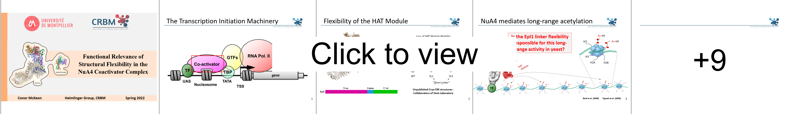
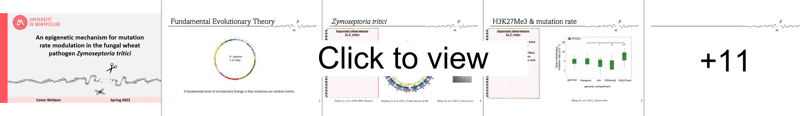

Reports
Functional Relevance of Structural Flexibility in NuA4 Coactivator Complex (2022)

An Epigenetic Mechanism for Mutation Rate Modulation in the Fungal Wheat Pathogen Zymoseptoria Tritici (2022)

Ireland's Hidden Pharmacy - Deep Sea Sponges (2019)

Presentations
Functional Relevance of Structural Flexibility in NuA4 Coactivator Complex (2022)

An Epigenetic Mechanism for Mutation Rate Modulation in the Fungal Wheat Pathogen Zymoseptoria Tritici (2022)

Bacterial Leukotoxins - Insights from Mass Spectrometry (2021)